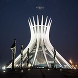
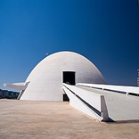
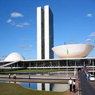

Catedral Metropolitana de Brasília

A Catedral Metropolitana de Brasília é famosa pelos seus 16 arcos
de concretos e pelos vitrais que mudam de cor de acordo com o horário
e a posição do sol. Além disso, em seu interior, há três esculturas
de anjos de bronze penduradas no teto e painéis que representam a via
sacra por Di Cavalcanti.
A Catedral é um dos pontos mais visitados da cidade e recebe visita todos os dias das 8h às 19h30.
Para saber mais a respeito acesse no Wikipédia
ou acesse Catedral.
Museu Nacional da República

O Museu Nacional de Brasília encanta pela sua arquitetura: por fora formas arredondadas, por dentro
linhas tortas traçam um cenário incomum. Lá você ainda vai encontrar exposições de diversos artistas plásticos.
Veja mais no Wikipédia
ou acesse Museu Nacional de Brasília.
Congresso Nacional

Se você vai a Brasília precisa conhecer o Congresso Nacional. O local é de fácil acesso através de várias
linhas de ônibus.
Outra opção também é ir de carro ou táxi. A arquitetura exuberante do prédio traz as famosas cúpulas invertidas,
aquelas que parecem dois pratos. Com certeza vale tirar uma foto.
Caso queira saber mais sobre a história do Congresso Nacional acesse no Wikipédia
ou direto no site do Congresso Nacional.